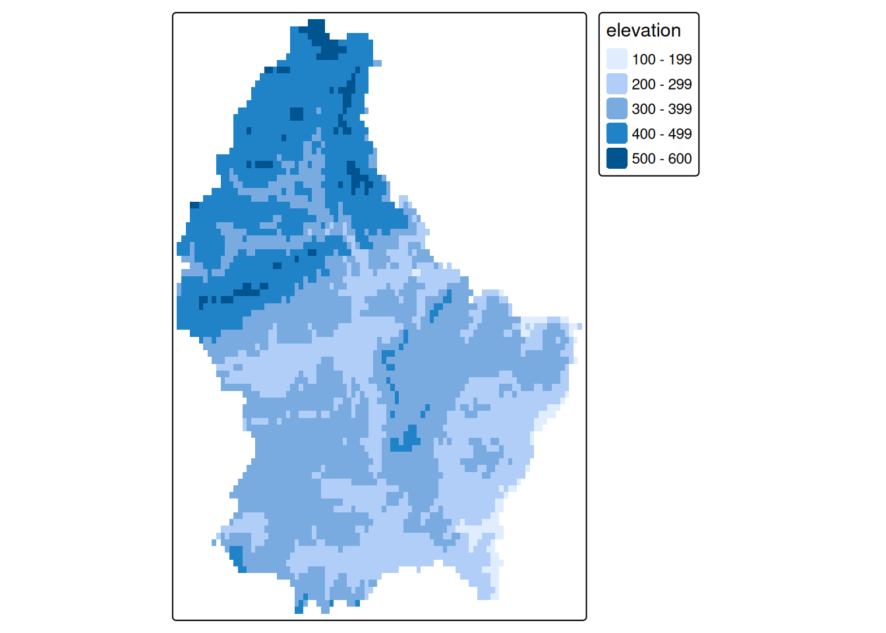
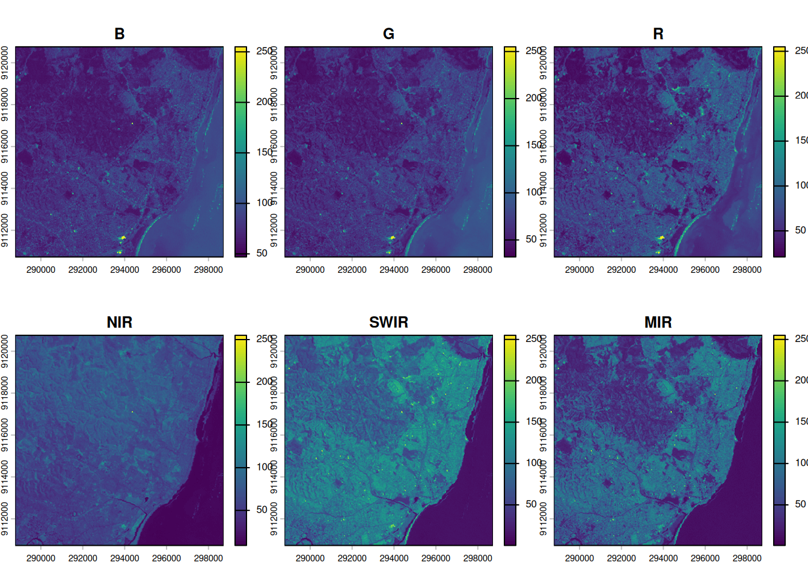
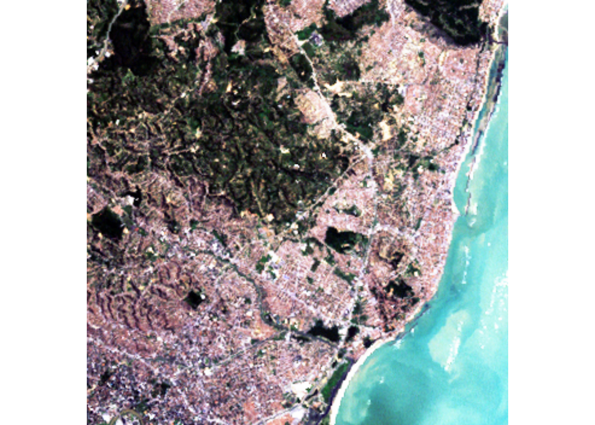
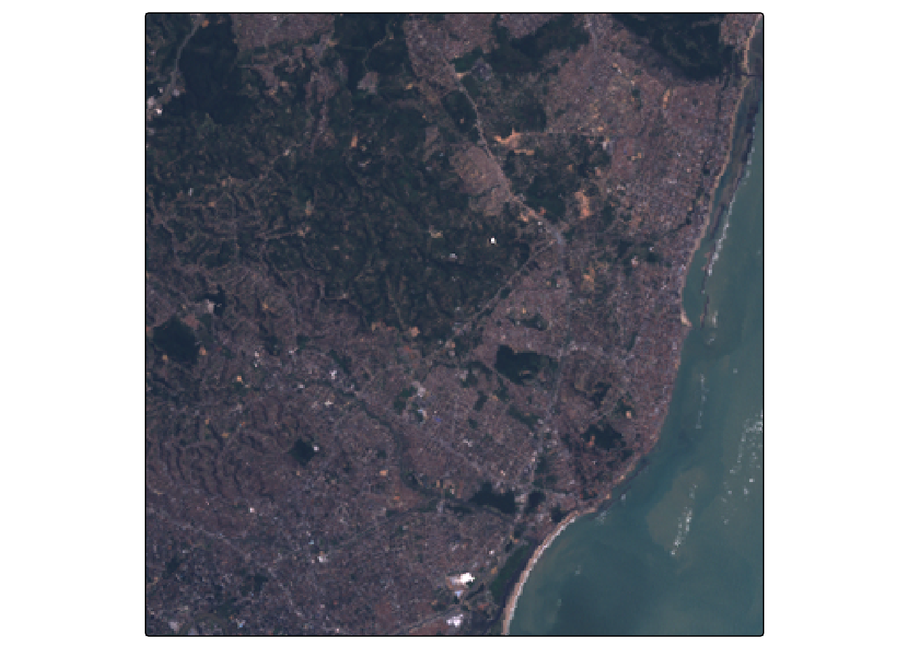
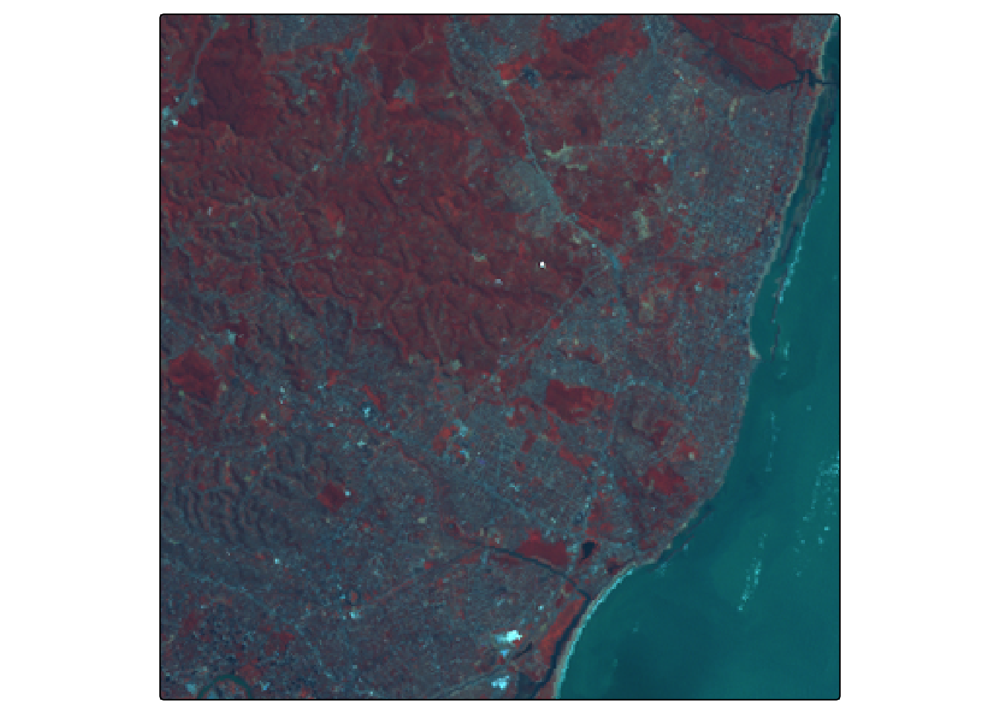
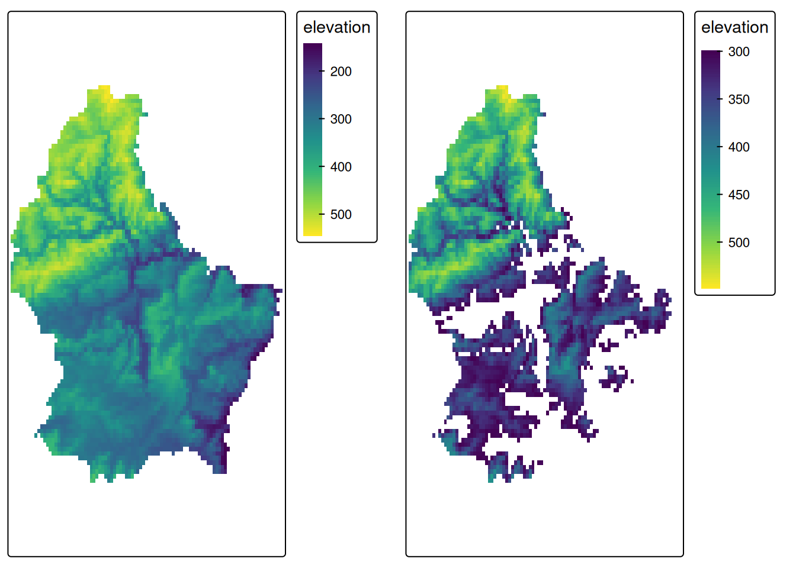

data(Produc, package = "plm")Lesson 1: Raster Data — Tasks
Important
- Try this without AI first - struggle builds understanding.
- Ask if you are struggling. Asking builds understanding as well!
We recommend Positron as your IDE for this course. It is built on VS Code, so the interface and shortcuts will feel familiar if you come from Python. It has a dedicated Variables pane, an integrated R console, and first-class support for both R and Python in the same project.
TipR for Python users
| Python | R | Notes |
|---|---|---|
x = 5 |
x <- 5 |
<- is the conventional assignment in R; = works but is avoided at the top level |
import numpy as np |
library(terra) |
Load packages with library(), install once with install.packages("terra") |
a[0] |
a[1] |
R is 1-indexed |
df.pivot(...) |
pivot_wider(...) |
Reshaping is done with tidyr functions |
df.method() chaining |
df \|> func() |
R uses the native pipe \|> to chain operations |
None / float('nan') |
NA |
R uses NA for all missing values; most functions have an na.rm = TRUE argument |
arr.shape |
dim(x), nrow(x), ncol(x) |
No single .shape; use dim() for the full dimensions |
Task 1
Import the Produc dataset (from the package plm) using the following code:
Task 2
Convert the data from long to wide
TipTip: pipes and tidyverse
The |> pipe passes the left-hand result as the first argument of the next function — equivalent to writing nested calls, but readable left-to-right. If you know pandas method chaining (.groupby().agg()), the mental model is the same.
tidyr and dplyr together are R’s closest equivalent to pandas:
pivot_wider()~df.pivot()select()~df[["col"]]filter()~df[df.x > 0]mutate()~df["new"] = ....
Task 3
Convert the wide dataframe to a matrix
Task 4
Calculate mean unemployment first using the wide dataframe, then the matrix. Compare the speed.
[1] 5.93sTask 5
The following command returns the path to a GeoTIFF file on your hard drive:
TipTip: terra vs rasterio / numpy
terra is R’s primary raster package. If you have used rasterio or numpy arrays for raster data in Python, here is a rough mapping:
| Python | R (terra) |
|---|---|
rasterio.open("f.tif") |
rast("f.tif") |
src.read() → numpy array |
values(r) → matrix |
src.meta |
print the SpatRaster object |
src.crs |
crs(r) |
src.transform / src.res |
res(r), ext(r) |
Unlike a raw numpy array, a SpatRaster keeps its spatial metadata (CRS, extent, resolution) attached at all times.
system.file("ex/elev.tif", package = "terra")Use this path to import the file using rast(), store it as r.
Task 6
Explore this object:
- Determine the minimum and maximum elevation values
- Make a static map using base
plot()andtmap - Make an interactive map using tmap (
tmap_mode("view")) - Using tmap, explore different styles and palettes
class : SpatRaster
size : 90, 95, 1 (nrow, ncol, nlyr)
resolution : 0.008333333, 0.008333333 (x, y)
extent : 5.741667, 6.533333, 49.44167, 50.19167 (xmin, xmax, ymin, ymax)
coord. ref. : lon/lat WGS 84 (EPSG:4326)
source : elev.tif
name : elevation
min value : 141
max value : 547
Task 7
Import the Landsat 7 image:
system.file("tif/L7_ETMs.tif", package = "stars")Store it as l7. Then rename its layers to c("B", "G", "R", "NIR", "SWIR", "MIR") (see here).
Task 8
Compare r and l7:
- How many layers does each have?
- What is the resolution of each?
- What is the extent of each?
- Plot all layers of
l7individually
[1] 1[1] 6[1] 0.008333333 0.008333333[1] 28.5 28.5SpatExtent : 5.7416666666666663, 6.5333333333333332, 49.441666666666663, 50.191666666666663 (xmin, xmax, ymin, ymax)SpatExtent : 288776.25000080315, 298722.75000054995, 9110728.7500289921, 9120760.7500287369 (xmin, xmax, ymin, ymax)
Task 9
Select the Red, Green and Blue bands from l7 to create a true color composite using plotRGB() and tm_rgb().


Task 10
Select the NIR, Green and Blue bands from l7 to create a false color composite.

Task 11
Query the full metadata of r and l7:
- Number of rows, columns, and layers
- Spatial extent
- Pixel resolution
- CRS (use
crs(..., describe = TRUE)for a readable summary)
Task 12
Check whether r uses a geographic or projected CRS. Reproject it to EPSG:2169 (Luxembourg national projection) and compare res() before and after.
TipTip: CRS and reprojection
In Python you would use pyproj.CRS or geopandas/rasterio’s .to_crs(). In terra, project(r, "EPSG:2169") handles both the coordinate transform and the pixel resampling in one step. A geographic CRS (degrees) will show res() values around 0.008, while a projected CRS (metres) will show values in the hundreds — same pixel, different units.
Task 13
Create a masked version of r where all elevations below 300 m are set to NA. Visualize both the original and the masked raster side by side.

Task 14
Write the reprojected raster from Task 12 to disk as a GeoTIFF. Then read it back and verify that the CRS and resolution are preserved.